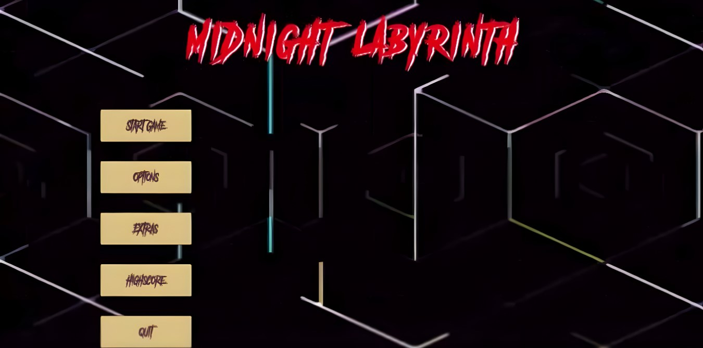
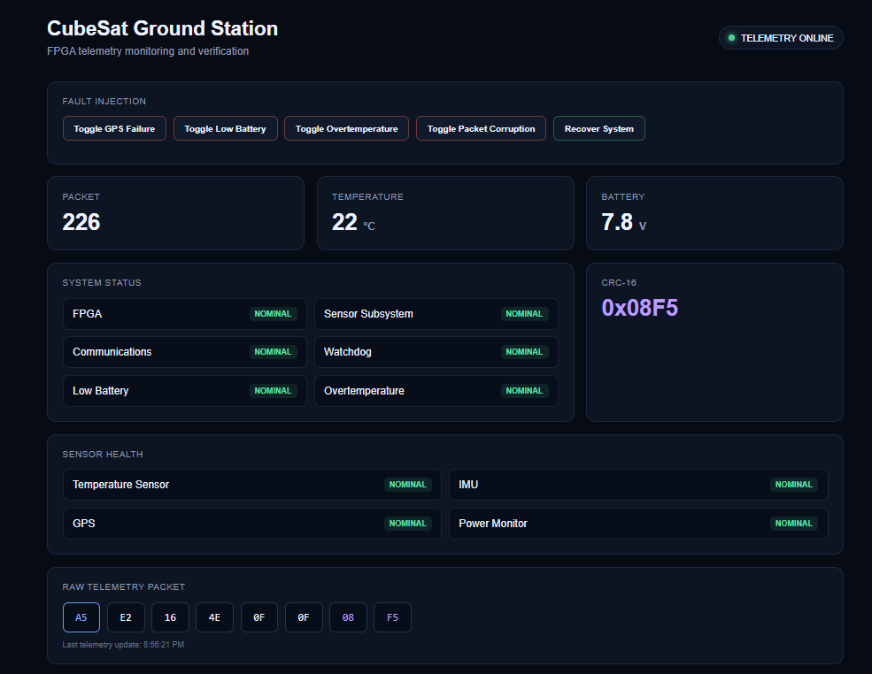

01
EMBEDDED SYSTEMS · DATA ACQUISITION
Embedded Systems Engineering Student — Data Acquisition (Co-op)
American Bureau of Shipping / Memorial University Research Team
SEP 2025 — DEC 2025 · ST. JOHN'S, NL
Computer Engineering graduate with hands-on experience across embedded systems, industrial automation and controls, software development, data acquisition, and data analysis.
01 / EXPERIENCE
Five engineering work terms across embedded systems, automation, software, data, and IT infrastructure.
EMBEDDED SYSTEMS · DATA ACQUISITION
American Bureau of Shipping / Memorial University Research Team
SEP 2025 — DEC 2025 · ST. JOHN'S, NL
SOFTWARE · LINUX · AUTOMATION
Information Technology Services — Memorial University
JAN 2025 — MAY 2025 · ST. JOHN'S, NL
INDUSTRIAL AUTOMATION · CONTROLS
Rio Tinto
JAN 2024 — MAY 2024 · LABRADOR CITY, NL
DATA · SOFTWARE DEVELOPMENT
Michelin
SEP 2022 — DEC 2022 · BRIDGEWATER, NS
INFORMATION TECHNOLOGY
Memorial University of Newfoundland
JAN 2022 — MAY 2022 · ST. JOHN'S, NL
02 / TECHNICAL STACK
Languages, frameworks, platforms, and engineering tools used across software, data, systems, and embedded development.
SOFTWARE
DEVELOPMENT · DATA
SYSTEMS · HARDWARE
03 / PROJECTS
Projects demonstrating embedded and FPGA design, software development, data visualization, mobile development, and interactive web engineering.

01A five-level 2D maze game featuring progressive difficulty, AI enemy pathfinding, fog of war, achievements, radar feedback, traps, and player power-ups.

02FPGA-oriented telemetry system combining Verilog RTL, CRC-protected packet generation, UART transmission, fault and health-state encoding, automated verification, and a Python / Flask ground-station dashboard.
Seven analysis projects covering geospatial, temporal, environmental, demographic, interactive, and statistical visualization techniques.
Collaboratively designed and developed as part of a four-person team, DoctorDash is a full-stack mobile application for finding specialized care and booking doctor appointments.
A responsive engineering portfolio featuring customized Vanta.js bird environments powered by Three.js, accessible navigation, responsive layouts, and lightweight custom JavaScript interactions.
04 / CONTACT